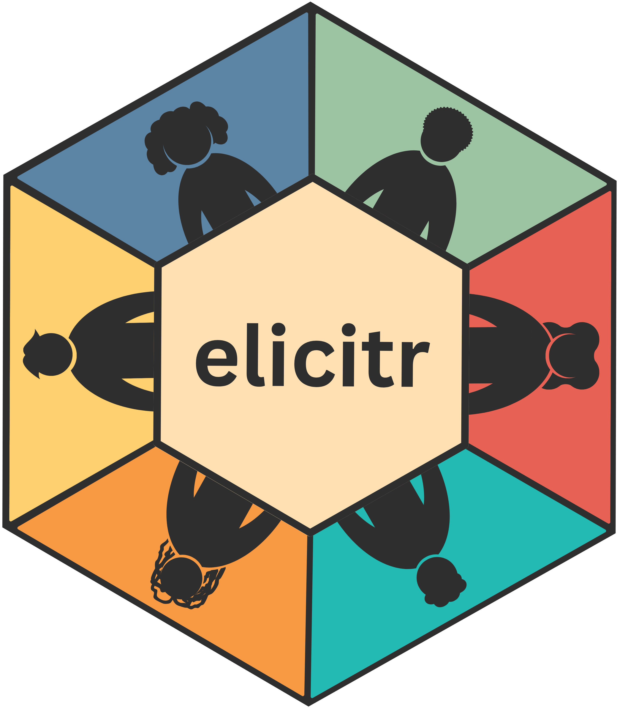

The elic_cat class: storing continuous elicitation metadata and data
Source:R/elic_cat.R
elic_cat.RdAn elic_cat object is an object of class elic_cat. It keeps the
information about your elicitation and the experts' responses together. It
acts as a folder for one elicitation project.
Details
The object holds two kinds of information:
*Metadata describe the elicitation: what topics are to be elicited, the options available for each topic, the categories for which probabilities are to be provided in each option and topic, and finally how many experts are expected to participate.
*Data are the responses provided by the experts.
Object elements
There are 6 elements in the elic_cat object:
topics: character vector with the names of the topics investigated.options: character vector with the names of the options investigated.categories: character vector with the names of the categories.experts: numeric, indicating the maximum number of experts participating in the elicitation process for one topic.data: list with the data collected during the elicitation process. The list has multiple elements, corresponding to the topics investigated.
Moreover, the object has a title attribute that binds a name to the object.
Creating the object and adding responses
First, use cat_start() to create the object by providing the metadata (aka the description of expected responses). Once this is done, the object describes your elicitation but contains no responses. Then use cat_add_data() to add the response data.
Save the result of each call using <-. For example,
my_elicitation <- cat_add_data(my_elicitation, responses, topic = "topic1")
updates the topic topic1 of the elic_cat object called my_elicitation
with the responses stored in the data file responses. Use these functions
to create and update the object rather than editing its contents manually, so
that the package can check the information.
Why keep metadata and data together?
The metadata tell the package what responses are expected.
This allows elicitr to check whether data subsequently added in
the elic_cat object fit the expectations. This way, data verification
happens automatically instead of having to be done manually by the user.
For example, elicitr knows that the sum of the estimates provided
by an expert for all categories must be 100 or to 1 for each option.
elicitr will check that data loaded in the elic_cat object fit
that description and provide errors or warnings if that is not the case.
Keeping this information together means you do not need to enter it again for every analysis. You can pass the same object to cat_get_data(), cat_sample_data(), cat_summary(), and plot() to retrieve responses, generate samples, summarise results, and create plots.